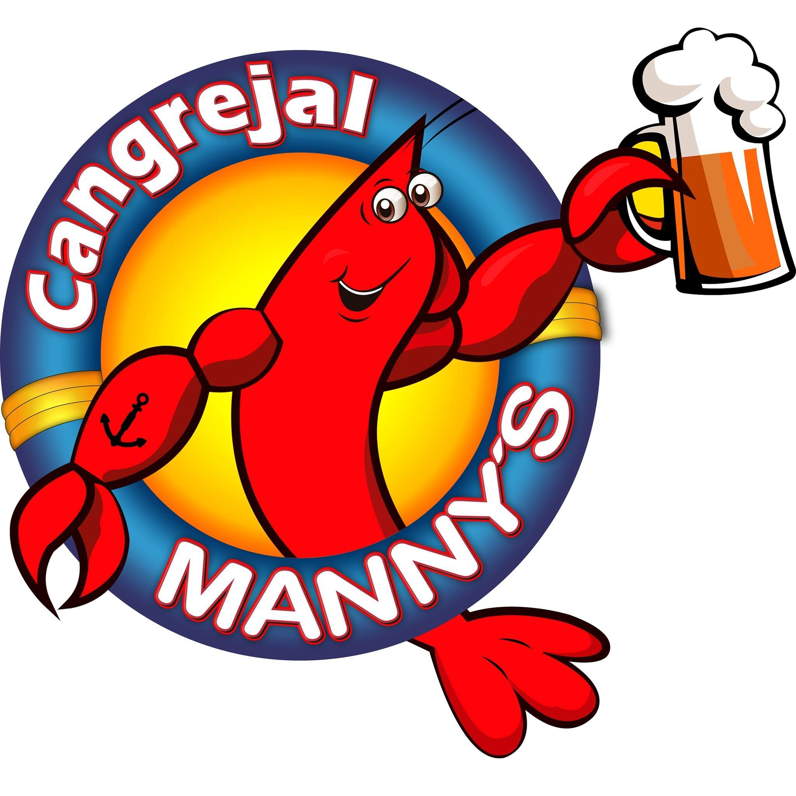

 El mejor restaurante de cangrejos y mariscos. Nuestras Especialidades Cangrejos Criollos, Al Ajillo, Encocados, parrillada de Mariscos, Conchas Asadas y nuestro delicioso Especial de Manny´´s y una extensa variedad platos en nuestro menú. Nos puedes encontrar en: Miraflores #112 y calle primera, Guayaquil Ecuador: 10h00 A 23h59 // Kennedy: 10h00 A 23h59 // Urdesa, Av. Víctor Emilio Estrada 920, Guayaquil: 10h00 A 23h59 //